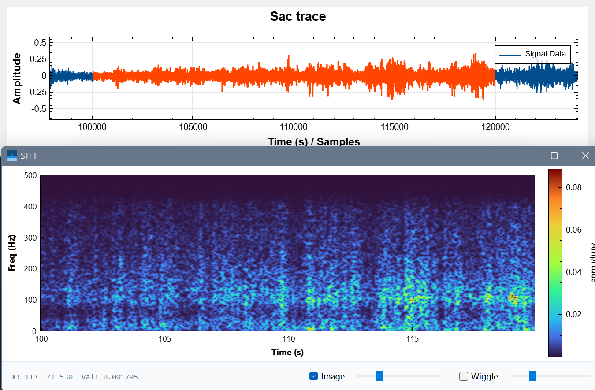
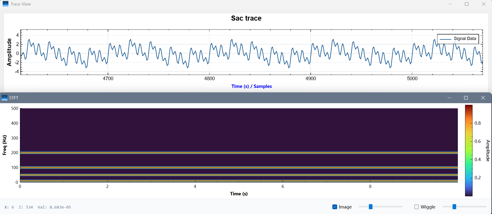
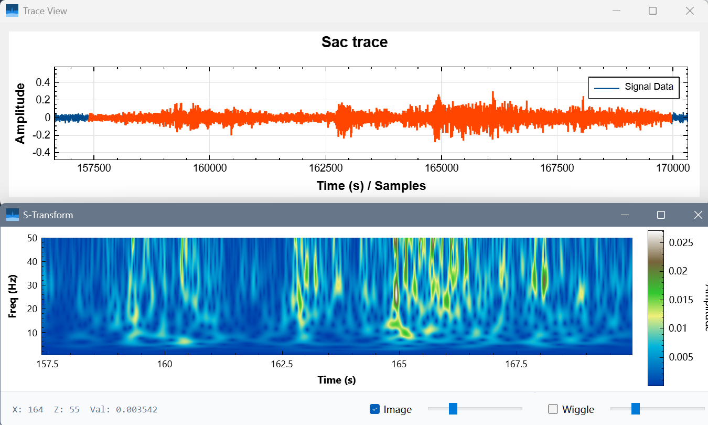
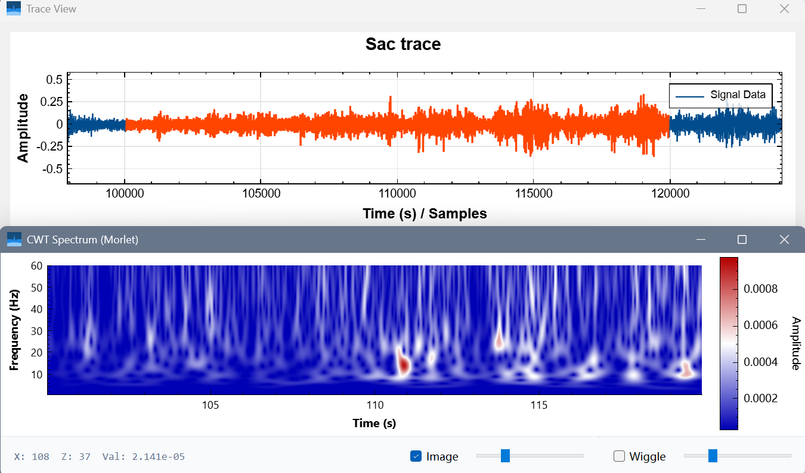

基于C++、omp并行计算的数字信号处理工具箱——SignalProcessingUtils
基于C++、omp并行的信号处理工具箱——SignalProcessingUtils
简介
SignalProcessingUtils 是一个用C++编写的高性能数字信号处理工具箱，集成了多种时频分析方法，包括短时傅里叶变换（STFT）、S变换和连续小波变换（CWT）。该工具箱利用OpenMP实现并行计算，显著提升了大规模数据处理的效率，适用于地震信号处理、语音分析和其他需要时频分析的领域。
示例图片
变换示例选取部分数据，使用Qcustomplot绘制STFT短时傅里叶变换

合成信号Components: 10Hz, 50Hz, 100Hz, 200Hz-STFT短时傅里叶变换

变换示例-S变换

变换示例-CWT连续小波变换

代码分享
STFT代码1
2
3
4
5
6
7
8
9
10
11
12
13
14
15
16
17
18
19
20
21
22
23
24
25
26
27
28
29
30
31
32
33
34
35
36
37
38
39
40
41
42
43
44
45
46
47
48
49
50
51
52
53
54
55
56
57
58
59
60
61
62
63
64
65
66
67
68
69
70
71
72
73
74
75//数据处理函数 STFT变换
// STFT变换
std::vector<std::vector<double>> stft_fft(
const std::vector<double>& x,
double fs,
int winSize,
int hop,
int nfft)
{
int N = (int)x.size();
// 自动修正 nfft，必须大于等于 winSize 且通常为 2 的幂
if (nfft < winSize) nfft = winSize;
// 基础参数检查
if (N < winSize || hop <= 0) return {};
int nFrames = (N - winSize) / hop + 1;
int nFreq = nfft / 2 + 1; // 单边谱 (0 到 fs/2)
// 结果矩阵：[频率行][时间列]
std::vector<std::vector<double>> spec(
nFreq, std::vector<double>(nFrames, 0.0));
// 1. 生成汉宁窗 (Hann Window)
std::vector<double> win(winSize);
double winSumSq = 0.0; // 用于能量归一化
for (int i = 0; i < winSize; ++i) {
win[i] = 0.5 * (1.0 - std::cos(2.0 * M_PI * i / (winSize - 1)));
winSumSq += win[i] * win[i];
}
// 2. 归一化系数 (Amplitude Spectrum)
// 如果想要功率谱密度(PSD)，系数计算方式不同。这里按幅度谱计算方便可视化。
// 对于加窗信号，恢复幅值通常除以 sum(win)/2 或者 sqrt(sum(win^2))
// 这里使用简单的幅值恢复，使得正弦波峰值接近真实振幅
double scale = 1.0;
double winSum = 0.0;
for (double w : win) winSum += w;
if (winSum > 0) scale = 2.0 / winSum;
// OpenMP 并行计算
{
Eigen::FFT<double> fft;
std::vector<std::complex<double>> timeBuf(nfft);
std::vector<std::complex<double>> freqBuf(nfft);
for (int i = 0; i < nFrames; ++i)
{
int pos = i * hop;
// 填充数据并加窗
std::fill(timeBuf.begin(), timeBuf.end(), std::complex<double>(0, 0));
for (int j = 0; j < winSize; ++j) {
if (pos + j < N) {
timeBuf[j] = x[pos + j] * win[j];
}
}
// 执行 FFT
fft.fwd(freqBuf, timeBuf);
// 计算幅值 (取前 nFreq 个点)
for (int k = 0; k < nFreq; ++k)
{
double mag = std::abs(freqBuf[k]) * scale;
spec[k][i] = mag; // 这里存幅值，如果颜色太暗可以在绘图时取对数
}
}
}
return spec;
}
S变换代码1
2
3
4
5
6
7
8
9
10
11
12
13
14
15
16
17
18
19
20
21
22
23
24
25
26
27
28
29
30
31
32
33
34
35
36
37
38
39
40
41
42
43
44
45
46
47
48
49
50
51
52
53
54
55
56
57
58
59
60
61
62
63
64
65
66
67
68
69
70
71//数据处理函数 S变换
std::vector<std::vector<std::complex<double>>> st_transform(
const std::vector<double>& t,
const std::vector<double>& Sig,
double freqlow, double freqhigh, double alpha)
{
const double PI = 3.14159265358979323846;
// 1. 基础参数计算
int nLevel = static_cast<int>((freqhigh - freqlow) / alpha) + 1;
int TimeLen = t.size();
if (TimeLen == 0) return {};
double dt = t[1] - t[0];
// 2. 预分配结果矩阵 (避免 push_back)
// wcoefs[freq_index][time_index]
std::vector<std::vector<std::complex<double>>> wcoefs(nLevel);
int processed_count = 0;
// 4. OpenMP 并行计算
// shared: 共享变量, private: 私有变量
for (int m = 0; m < nLevel; ++m) {
// 每个线程分配内存
wcoefs[m].resize(TimeLen);
double f = freqlow + m * alpha;
// 避免 f=0 导致除零 (S变换中 f=0 通常处理为直流分量或跳过)
if (std::abs(f) < 1e-6) f = 1e-6;
double sigma_f = 1.0 / std::abs(f);
double factor = 1.0 / (sqrt(2 * PI) * sigma_f);
double sigma_sq_inv = 1.0 / (sigma_f * sigma_f); // 预计算 1/sigma^2
// 时间平移循环 (tau) - 对应 n
for (int n = 0; n < TimeLen; ++n) {
std::complex<double> sum(0.0, 0.0);
double tau = t[n]; // 当前平移时间
// 积分循环 (t) - 对应 k
// 注意：这种直接卷积是 O(N^2)，数据量大时仍较慢，FFT方法是 O(NlogN)
for (int k = 0; k < TimeLen; ++k) {
double time_diff = tau - t[k]; // (tau - t) 或 (n*dt - t[k])
// 高斯窗部分
double exponent = -0.5 * (time_diff * time_diff) * sigma_sq_inv;
// 如果 exponent 太小，exp 接近0，可以剪枝优化
if (exponent < -10.0) continue;
double gauss_val = factor * std::exp(exponent);
// 复指数部分 e^(-i * 2 * PI * f * t[k])
double phase = -2 * PI * f * t[k];
// 欧拉公式: exp(ix) = cos(x) + i*sin(x)
std::complex<double> complex_exp(std::cos(phase), std::sin(phase));
sum += Sig[k] * gauss_val * complex_exp;
}
wcoefs[m][n] = sum * dt;
}
}
return wcoefs;
}
CWT代码1
2
3
4
5
6
7
8
9
10
11
12
13
14
15
16
17
18
19
20
21
22
23
24
25
26
27
28
29
30
31
32
33
34
35
36
37
38
39
40
41
42
43
44
45
46
47
48
49
50
51
52
53
54
55
56
57
58
59
60
61
62
63
64
65
66
67
68
69
70
71
72
73
74
75
76
77
78
79
80
81
82
83
84
85
86
87
88
89
90
91
92
93
94
95
96
97
98
99
100
101
102
103
104
105
106/**
* @brief 连续小波变换 (CWT) - 基于 Morlet 小波
* @param sig 输入信号
* @param fs 采样率
* @param f_min 最小分析频率
* @param f_max 最大分析频率
* @param num_freqs 频率点数 (决定纵轴分辨率)
* @param omega0 Morlet 参数 (通常取 6.0, 类似地震子波)
* @return 结果矩阵 [频率行][时间列] (复数结果)
*/
std::vector<std::vector<std::complex<double>>> cwt_morlet(
const std::vector<double>& sig,
double fs,
double f_min,
double f_max,
int num_freqs,
double omega0 = 6.0)
{
int n = sig.size();
// 1. 为了消除循环卷积的边缘效应，进行补零到 2 的幂次 (Next Power of 2)
int n_padded = std::pow(2, std::ceil(std::log2(n)));
// 如果数据太短，至少补到一定长度
if (n_padded < 2 * n) n_padded *= 2;
// 2. 预计算信号的 FFT
Eigen::FFT<double> fft;
std::vector<std::complex<double>> sig_padded(n_padded, 0.0);
for (int i = 0; i < n; ++i) sig_padded[i] = sig[i];
std::vector<std::complex<double>> sig_fft;
fft.fwd(sig_fft, sig_padded);
// 3. 构建角频率轴 (Angular Frequency Axis)
// 对应 FFT 的频率分布: [0, 1, ..., N/2, -N/2+1, ..., -1] * (2*pi*fs/N)
std::vector<double> omega(n_padded);
double dw = 2.0 * M_PI * fs / n_padded;
for (int i = 0; i < n_padded; ++i) {
if (i <= n_padded / 2)
omega[i] = i * dw;
else
omega[i] = (i - n_padded) * dw;
}
// 4. 准备结果矩阵
std::vector<std::vector<std::complex<double>>> cwt_matrix(num_freqs);
// 5. 并行循环计算每个尺度的 CWT
// 我们按照线性频率分布来计算，这样画图时纵轴是线性的
for (int i = 0; i < num_freqs; ++i)
{
// 当前分析频率
double f = f_min + i * (f_max - f_min) / (num_freqs - 1);
if (f <= 1e-6) f = 1e-6; // 保护
// 将频率转换为尺度 (Scale)
// 对于 Morlet (omega0=6), scale = (omega0 + sqrt(2 + omega0^2)) / (4 * pi * f)
// 简化近似公式: scale = omega0 / (2 * pi * f)
double scale = omega0 / (2.0 * M_PI * f);
// 构造 Morlet 小波的频域响应 (Analytical Morlet)
// Psi_hat(w) = pi^0.25 * sqrt(2*s) * exp(-0.5 * (s*w - w0)^2) * step(w)
// 注意：CWT 定义为 IFFT( X(w) * sqrt(s) * Psi_hat*(s*w) )
// 为了保持能量守恒或幅度物理意义，归一化系数会有所不同。
// 这里使用幅度归一化，使得正弦波的 CWT 幅值接近真实幅值。
std::vector<std::complex<double>> wavelet_fft(n_padded, 0.0);
double norm_factor = std::pow(M_PI, 0.25) * std::sqrt(2.0 * scale); // 标准因子
for (int k = 0; k < n_padded; ++k)
{
// Analytic Wavelet 只有正频率部分
if (k > 0 && k < n_padded / 2 + 1) // omega[k] > 0
{
double sw = scale * omega[k];
double exponent = -0.5 * std::pow(sw - omega0, 2);
// 优化：太小的指数直接忽略
if (exponent > -20.0) {
// 频域乘法: Signal_FFT * Wavelet_FFT
// 乘以 (2/fs) 甚至更多是为了幅值恢复，这里先算标准定义
wavelet_fft[k] = sig_fft[k] * std::exp(exponent);
}
}
}
// IFFT 变换回时域
std::vector<std::complex<double>> time_domain_out;
fft.inv(time_domain_out, wavelet_fft);
// 截取原始长度并归一化
cwt_matrix[i].resize(n);
// 经验归一化系数，使得幅值看起来物理意义更强
// CWT 的幅值物理意义比较复杂，通常看相对值
double output_scale = std::sqrt(scale) * (dw / std::sqrt(2 * M_PI));
for (int t = 0; t < n; ++t) {
cwt_matrix[i][t] = time_domain_out[t] * output_scale;
}
}
return cwt_matrix;
}